互惠动态
|
|
《纽约时报》2016年度最佳少儿图书榜单Top20
自1952年起，《纽约时报》书评版便组成独立评委会，评选最具艺术价值的绘本。今天我们分享的是《纽约时报》权威书评人评选的2016年最佳少儿读物——共20本书，适合3岁儿童至14岁以上青少年阅读。主题包含：
探索生命生长与衰退的哲学；
探讨战争与和平、难民问题等宏大话题；
着眼生活小事，感悟师生之间、朋友之间、人与动物之间的真挚情感；
直面成长的烦恼和勇气……
壹
适合3-9岁孩子阅读
1、Du Iz Tak? 《这是什么？》
适合年龄：3-8岁
作者：Carson Ellis
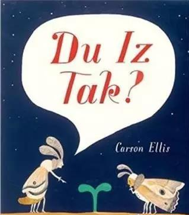
人生是一个充满变化的过程。
但是，我们该如何跟孩子解释这个道理呢？这正是绘本作家兼画家Carson Ellis想通过这本《Du Iz Tak？》探讨的问题。
一些小昆虫发现了一株快速成长的植物，决定搭建一个城堡，却不幸被蜘蛛占领，戏剧性的是，鸟又吃了蜘蛛。昆虫们把剩下的蜘蛛网清理掉……秋去冬来，一切又重新开始。
这个故事乍看有点像是“螳螂捕蝉，黄雀在后”，但它真正探讨的是生命的快乐和悲伤、生长和衰退。
本书还有一个特色，昆虫之间的语言，简直是外星语，爸爸妈妈和孩子都站在了“不认字”的同一起点，跟着清新奇趣的插画，一起展开故事人物对白大猜想！
2、I Am Pan!
适合年龄：5-9岁
作者：Mordicai Gerstein
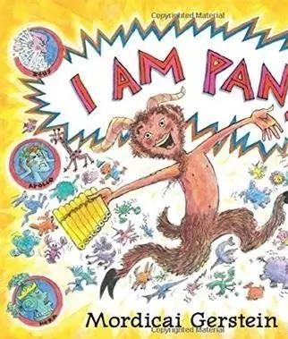
如果要在希腊神话中找到一位欢乐之神，那一定是本书的主人公——潘！
书中的每一页都充满幽默，和奇思妙想的行动。
《纽约时报》书评人Maria Russo对这本书就高度评价，“这种具有分享价值，但又常常被忽略的希腊神话，似乎在经典好莱坞电影和现代绘本小说中都有所欠缺。这本书恰好作了补充。”
3、We Found a Hat
适合年龄：3-7岁
作者：Jon Klassen
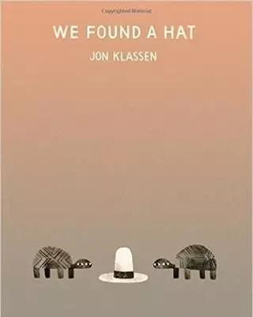
两只乌龟发现了一顶帽子，他们俩戴起来都很好看。可是乌龟有两只，帽子却只有一顶，他们是要听从欲望的召唤，还是维护彼此的友情呢？乌龟们的选择或许会给孩子们的日常社交带来一些启发。
《We Found a Hat》 频频出现在2016最佳图书榜单，作者是绘本界最令人惊叹的天才作者乔恩·克拉森——一位爱讲惊悚、紧张、悬疑、“冷面幽默”故事的80后大男孩。
他非常擅长刻画人物眼神，在这本书里，他又一次展现了他对眼神的精准捕捉：“单靠乌龟的眼神和头部动作，就展现了一系列的内心活动——激动、诱惑、背叛、顿悟、 满足。”
但这本书和乔恩以往的黑色风格略有不同，读者将在结尾时有出乎意料之感。
4、This is Not a Picture Book
适合年龄：4-7岁
作者：Sergio Ruzzier
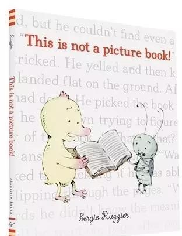
一只聪明可爱的鸭子，爱看图画书。但是此刻，他手里拿着的却不是他喜欢的图画书！小鸭很烦恼，可让它想不到的是，原来，文字和图画一样生动美丽呢！
书评人Geek Dad很喜欢这本书，他的推荐理由是：“这是一本图画书，但它的神奇之处，在于展现了文字之美。”
5、The Journey
适合年龄：3-8岁
作者：Francesca Sanna
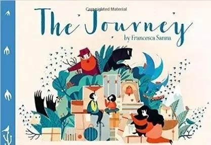
战争爆发，一位母亲和两个孩子被迫离开自己温暖的家，远走他乡寻找避难所。这本书用简洁率直的语言、色彩丰富的插画，呈现了这个让人心酸、语言率直，色彩丰富，画面安静地呈现了难民们面临的严酷现实，和他们对美好未来的希望，能让孩子了解真正的难民，培养共情能力。
6、Leave Me Alone!
适合年龄：4-8岁
作者：Vera Brosgol
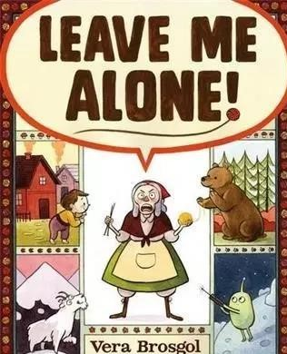
每一位喜欢和平与平静生活的人，大概都会喜欢本书的主人公——一位只想安静编织的老奶奶。
本书巧妙地融合了民俗和星际等元素，让读者在怀旧和超现实之间自由切换。有的句子看起来像是在大喊大叫，但配上线条干净和色彩明亮的插画，倒像是在愉快地欢呼。
7、My Name Is James Madison Hemings
适合年龄：5 - 9 岁
作者：Jonah Winter
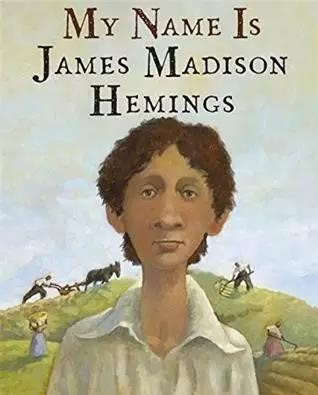
这本书诚实地探讨了一个敏感、好奇的男孩（美国第三任总统托马斯·杰斐逊的儿子）和他的奴隶萨利·海明斯的生活故事。
8、School's First Day of School
适合年龄：3 - 8 岁
作者：Adam Rex
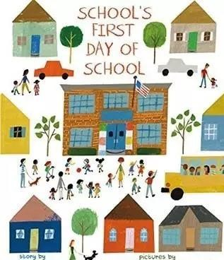
弗雷德里克·道格拉斯小学是一所新建的学校，开学第一天，它有些紧张，因为它会迎来很多新学生，开启一段未知的经历。
作者 Rex 描绘了一个温暖有趣的故事，与插图作者Robinson画的轻松可爱的插图相映成趣。
9、The Thank You Book
适合年龄：4 - 7 岁
作者：Mo Willems
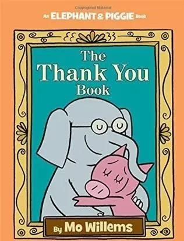
大象和小猪是好朋友，但它们很不同。比如，大象很细心，小猪正好相反。
在这本书里，小猪想对每一个帮助过它的人表示感谢，细心的大象开始担心，小猪这么粗心，会不会忘记感谢某些重要的人呢？这是一个温暖的，关于爱和友谊的故事。
10、They All Saw a Cat
适合年龄：3 - 6 岁
作者：Brendan Wenzel
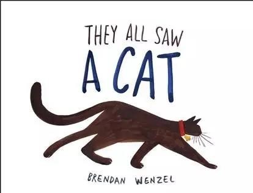
通过这本书，你可以尝试从其他动物的角度来看这个世界。
就算不是猫咪的爱好者，你也能很好地欣赏到作者Wenzel 的才能，带领你用猫的眼睛来看一只狗，一条金鱼，一条蛇，一只狐狸，或者一只鸟。
11、Thunder Boy Jr
适合年龄：3 - 7 岁
作者：Sherman Alexie
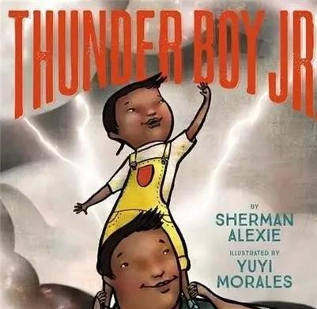
一个小男孩想要选择一个独特的名字，这个名字只属于他，但同时也要能体现他和他父亲之间的联系。
作者Alexie 带小朋友一起关注了这个人人都会遇到的私密问题。Morales 的插画风格活泼，传递了家庭成员之间的爱和快乐的氛围。
贰
适合8-12岁孩子阅读
12、Ms. Bixby’s Last Day
适合年龄：8-12岁
作者：John David Anderson
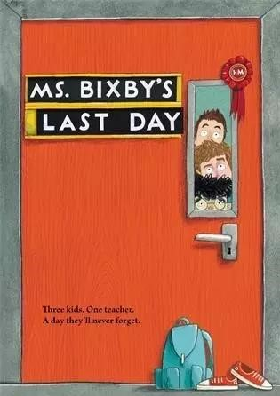
每个老师都是不一样的，有的温和，有的严厉，有的老师你记不住，也有的老师让你忘不了。比克斯比小姐显然是后者。她让孩子们觉得学校是值得去的地方，她总能发现孩子们身上的闪光点。
Topher，Brand和Steve比任何人都更了解这一点。所以，当比克斯比小姐因为生病，不得不在学期结束前离开学校时，三个孩子提出了一个冒险计划——他们想给比克斯比小姐一个完美的欢送会。可是，芝士蛋糕爆炸了，他们还遭遇了一个纹身的坏蛋，一个鲨鱼出没的厕所……三个孩子能解决这些难题，实现他们的小小愿望吗？
《纽约时报》书评人对这本书的推荐理由是：“这是3个问题男孩和一位受人尊敬的老师之间的故事，故事有趣且充满正能量。”
13、Pax《狐狸Pax》
适合年龄：8-12岁
作者：Sara Penny packer
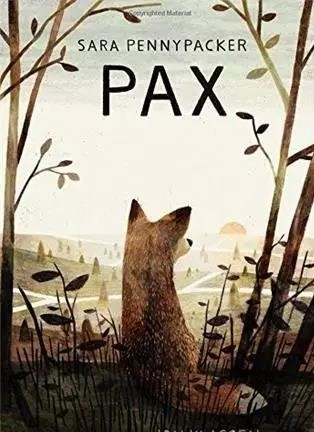
战争爆发，父亲应征奔赴战场，小男孩Peter被迫搬到祖父家——这意味着，Peter将和自己的宠物狐狸Pax分开。
搬到祖父家的第一晚，Peter就逃出来了，他下定决心一定要找到Pax，而此时战争已席卷全国。Peter和Pax展开了一段寻找彼此，并最终得以重聚的史诗之旅。
《纽约时报》书评人Katherine Rundell评价它为“让人印象深刻、有共鸣的故事”，相信您家孩子看了，也有类似体会。
14、When the Sea Turned to Silver
适合年龄：8-12岁
作者：Grace Lin
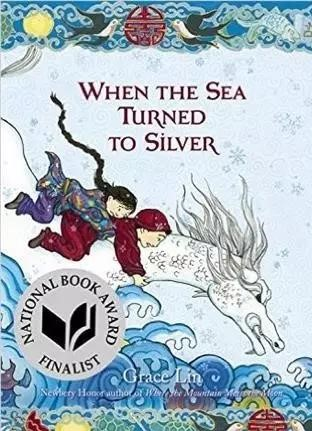
一个全彩插图的绘本，奇幻想象的灵感来自中国民间传说。
这是华裔作家 Grace Lin （林珮思）的最新作品，也是纽伯瑞获奖小说《月夜仙踪》的续集。Grace Lin 的很多作品中都有浓浓的中国味，读起来有一种天然的文化亲近感。
小女孩Pinmei，有一位温柔、慈爱的奶奶——她常常给孙女和其他村民讲激动人心的故事。突然有一天，皇帝的士兵把奶奶抓走了，平静的生活被打破。 每个人都知道，皇帝真正想要的是一件民间宝物——夜光石。为了救出奶奶，Pinmei和一个神秘的小男孩Yishan，共同踏上了寻找夜光石的奇幻之旅。
《纽约时报》书评人Emily Jenkins评价它，“此书有着超越奇迹和情感的重量。”
15、Ghost
适合年龄：8-12岁
作者：Jason Reynolds
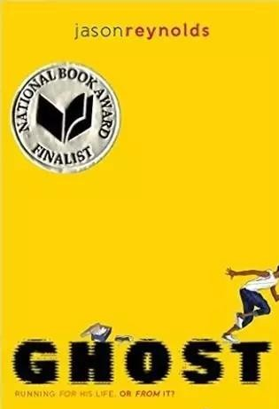
Ghost、 Lu.、Patina、 Sunny是 4 个成长背景、个性各不相同的孩子，同时，他们也是精英中学田径队的队友。
如果他们齐心协力，他们很可能获得参加青少年奥运会的机会。这是一个关于他们个人和整个团队的成长故事。
16、Raymie Nightingale
适合年龄10岁以上
作者：Kate DiCamillo
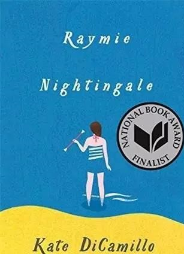
蕾米遭父亲抛弃之后变得非常孤独，在参加一个比赛的过程中，她跟两个本来不太可能成为朋友的女孩变得亲密起来，三人想要的东西完全不一样，但她们互相帮助，一起成长。故事充满了幽默和希望的气息。
叁
适合13岁以上孩子阅读
17、Salt to the Sea
适合年龄：13岁以上
作者：Ruta Sepetys
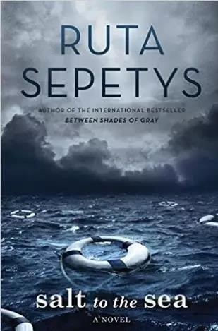
第二次世界大战末期，一群年轻的难民为躲避战火，登上了威廉·古斯特洛夫号客轮。谁知，死神的脚步却悄悄靠近。苏联潜艇误认为这是一艘满载纳粹士兵的敌船，随即发起攻击，并最终把威廉·古斯特洛夫号客轮击沉。这造成了世界历史上最严重的一次海难，万余名乘客中，有9千多人因溺水或船体爆炸而葬身大海，死亡人数是“泰坦尼克号”的6倍，仅有约1000人获救。
这本书描述的故事，正是这次海难的一个缩影，向人们展示了二战历史上一个可怕的但又鲜为人知的时刻。
纽约时报的畅销书《灰烬中的余光》作者Sabaa Tahir评价此书 “残酷、宏大，且诚实”。
18、The Serpent King
适合年龄：14岁以上
作者：Jeff Zentner
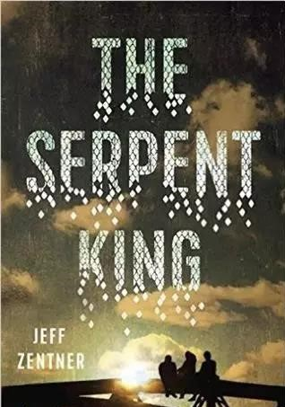
这本书先后登上纽约时报、亚马逊、BuzzFeed2016年度最佳图书榜单，讲述了3位青少年彼此帮助，共同面对暴力和家庭困境的故事。友谊、家庭、宽恕——三大主题贯穿全书，尽管故事情节让人心碎，但也不乏幽默和乐观。
贫穷的美国南方农村、永恒的友谊、对信仰的坚持、对未知的恐惧，以及勇气所带来的茁壮成长，都在作者Zentner这本优秀的小说中一一呈现。
在《纽约时报》书评人Kirkus看来，作者在字里行间流露的体悟和优雅，也很值得细细品味。
19、The Sun Is Also a Star
适合年龄：14岁以上
作者：Nicola Yoon
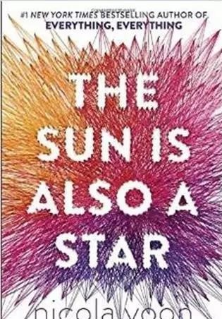
故事的主要情节发生在24小时里，一个牙买加女孩在即将被驱逐出境时，遇见了一个韩裔美国男孩。随后发生的故事，充满浪漫与哲理，也让人充满希望。
这本书先后登上纽约时报、BuzzFeed、Publishers Weekly等年度最佳图书榜单，书评人Shelf Awareness曾这样评价，“这本小说探讨了身份认知、家庭、对科学的喜爱以及爱的科学等问题，是一个关于看见与被看见的故事。这本书在我看来是‘闪闪发光’的。”
20、Still Life with Tornado
适合年龄：14岁以上
作者：A.S. King
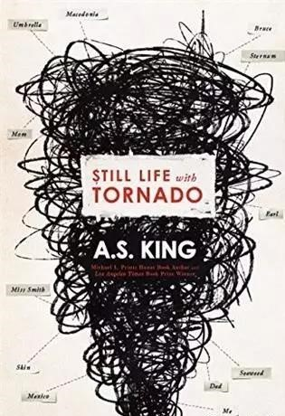
16 岁的莎拉发现自己没法画画了，可是在她的记忆里，她曾经是会画画的。与此同时，她也隐约感觉到一股生存危机——她竟然在过去和未来中不断切换游走。心爱的哥哥的离开、父母婚姻的破裂，都给莎拉带来心灵创伤。
这本书里，既有对人物内心创伤和坚韧的深入描述，也充满同情和智慧。
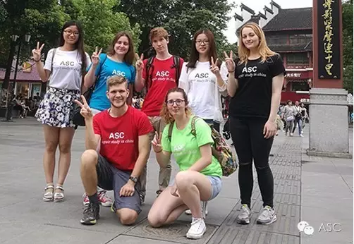